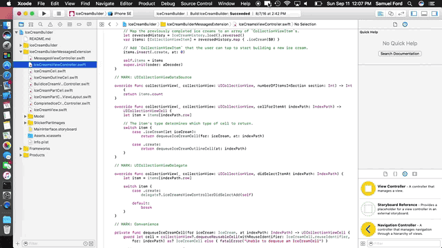

Snipposé -
Rename Finder Items -
Tipler
Snipposé
Snipposé 
A simple macOS tool for briefly hightlighting a small portion of a screen, zooming and centering it on the screen until dismissed. Great for presentations or just quickly checking the pixels on a design.
Inspired by a similar tool shown on a WWDC 2016 video.
Help & Support
Questions or trouble? Feel free to reach out by email at support@samuelwford.com or on Twitter at @samuelwford.
Privacy Policy
Snipposé does not collect or transmit any information about you. It does not track when you use it, how you use it, where you are when you use it, what kind of Mac you have, or anything else really.